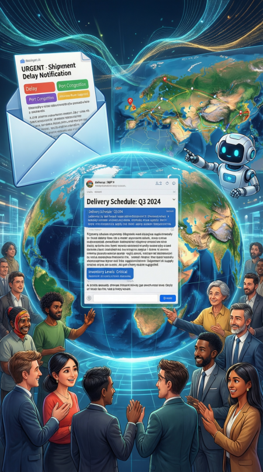
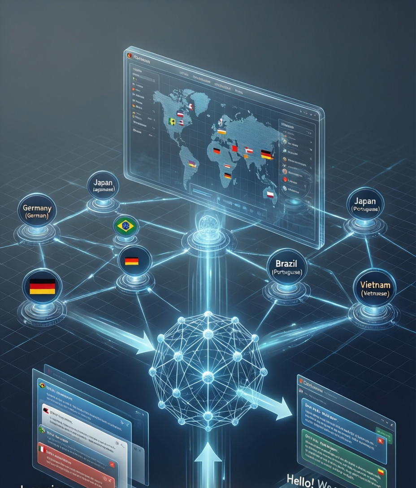

เทคโนโลยีที่ทำให้คอมพิวเตอร์เข้าใจและประมวลผลภาษามนุษย์ เช่น การแปลภาษา แชตบอท และการวิเคราะห์ข้อความ
NLP ช่วยแปลเอกสาร วิเคราะห์อีเมล ลดข้อผิดพลาด เพิ่มความรวดเร็ว และสนับสนุนการตัดสินใจในระดับนานาชาติ
ความแตกต่างทางภาษาและข้อมูลที่ไม่สอดคล้อง อาจทำให้การตัดสินใจล่าช้า จึงต้องมีระบบสนับสนุนการสื่อสารข้ามภาษา
เพื่อประเมินผลการประยุกต์ใช้ NLP และ AI ในซัพพลายเชนจากองค์กรระดับโลก
Unbabel เป็นแพลตฟอร์มการแปลภาษาที่ขับเคลื่อนด้วย AI โดยผสาน NLP, Neural Machine Translation (NMT) และการตรวจแก้โดยมนุษย์ (Human-in-the-loop) เพื่อแปลข้อความและอีเมลแบบเรียลไทม์ เหมาะสำหรับองค์กรที่มีการสื่อสารข้ามภาษาในซัพพลายเชน
| คู่ภาษา | จำนวนคำที่แปล |
|---|---|
| German – English | 455,298,638 |
| French – English | 371,302,992 |
| English – German | 301,000,812 |
| English – French | 263,942,564 |
| Italian – English | 179,979,945 |
ตัวอย่างองค์กรระดับโลกที่ใช้ NLP และ AI เพื่อเพิ่มประสิทธิภาพด้านโลจิสติกส์และการสื่อสาร

DHL ใช้ NLP ในระบบ Chatbot เพื่อรองรับลูกค้าหลายภาษา
ใช้ AI และ NLP ร่วมกับผู้เชี่ยวชาญมนุษย์ เพื่อการแปลระดับองค์กร

ใช้ NLP วิเคราะห์ข่าวสารหลายภาษา เพื่อแจ้งเตือนความเสี่ยงในซัพพลายเชน
ข้อดีและข้อจำกัดของการประยุกต์ใช้ NLP ใน Supply Chain
NLP ช่วยแปลเอกสาร ข้อความ และอีเมลหลายภาษา ลดความผิดพลาดจากการสื่อสารข้ามประเทศ
สกัดข้อมูลสำคัญจากข้อความ เพื่อประเมินความเสี่ยงและตอบสนองได้รวดเร็ว
ช่วยพยากรณ์ความต้องการสินค้า ลดปัญหาขาดหรือเกินสต็อก
ประมวลผลข้อมูลที่ไม่เป็นโครงสร้าง (Unstructured Data) ได้อย่างมีประสิทธิภาพ
ข้อมูลไม่สมบูรณ์หรือไม่ทันสมัย ทำให้ผลลัพธ์คลาดเคลื่อน
ภาษา วัฒนธรรม และบริบทที่แตกต่าง ยังเป็นความท้าทาย
ต้องใช้ระบบคอมพิวเตอร์ และบุคลากรที่มีความเชี่ยวชาญ
การวิเคราะห์เอกสาร อีเมล และข้อมูลหลายภาษา ด้วย NLP ช่วยให้การพยากรณ์ความต้องการสินค้าแม่นยำยิ่งขึ้น ลดการสูญเสียสินค้าและต้นทุนด้านสต็อกอย่างมีนัยสำคัญ
NLP ช่วยให้บริษัทไทยสามารถสื่อสารกับพันธมิตรต่างประเทศ ได้อย่างรวดเร็วและแม่นยำ ลดข้อผิดพลาดจากความแตกต่างทางภาษาและวัฒนธรรม
เทคโนโลยี NLP และ AI สนับสนุนการตัดสินใจแบบเรียลไทม์ เพิ่มความยืดหยุ่นของซัพพลายเชน และสอดคล้องกับแนวคิด Supply Chain 4.0
การวิเคราะห์ข่าวสาร ข้อมูลออนไลน์ และเอกสารจำนวนมาก ช่วยให้องค์กรสามารถระบุความเสี่ยง และตอบสนองต่อเหตุการณ์ไม่คาดคิดได้อย่างทันท่วงที
ผลการศึกษาชี้ให้เห็นว่า การนำ NLP และ AI มาใช้ในองค์กร สามารถช่วยลดต้นทุนด้านการแปลและการจัดการข้อมูล เพิ่มความรวดเร็วในการสื่อสาร และสนับสนุนการตัดสินใจของผู้บริหารอย่างมีประสิทธิภาพ
เทคโนโลยีดังกล่าวช่วยยกระดับความสามารถในการแข่งขัน เพิ่มความยั่งยืนขององค์กรในซัพพลายเชนระหว่างประเทศ ภายใต้สภาพแวดล้อมทางธุรกิจที่เปลี่ยนแปลงอย่างรวดเร็ว
Scan for Services